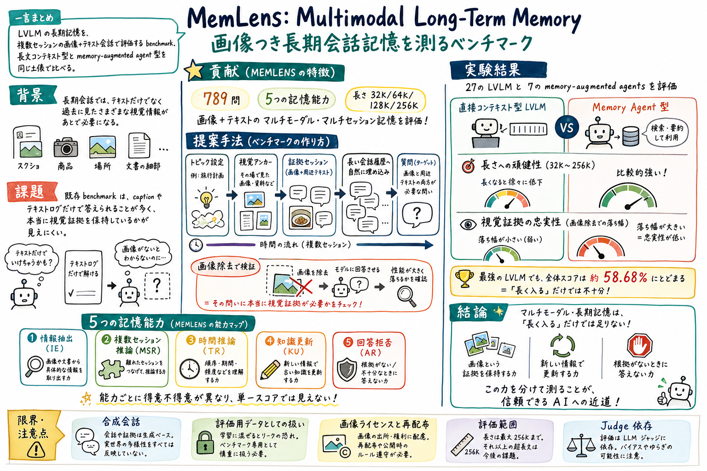

第一の貢献は、789 問からなる multimodal conversational memory benchmark を作ったこと。32K、64K、128K、256K の4つの入力長で、長文コンテキストと memory agent を比較できる。

どんな論文か
MemLens の問題意識は、長期記憶を持つ AI アシスタントがテキストだけを覚えていればよいのか、というところにある。現実の長い会話では、過去に共有された画像、スクリーンショット、文書、商品、場所の見た目が、あとから質問の根拠になる。
既存の長期記憶 benchmark は、会話が複数セッションにまたがっていても、画像がない、または画像の caption や周辺テキストだけで答えられることが多い。そのため、モデルが本当に視覚証拠を保持しているのか、単にテキスト化された手がかりで答えているのかが見えにくい。
MemLens は、multimodal multi-session conversation に対する 789 問の benchmark を作り、information extraction、multi-session reasoning、temporal reasoning、knowledge update、answer refusal の5能力で評価する。入力長は 32K、64K、128K、256K に揃えられ、長文 LVLM と memory-augmented agent を同じ枠組みで比較する。
結果は、multimodal memory が単一能力ではないことを示す。情報抽出が強いモデルが複数セッション推論にも強いとは限らず、知識更新や回答拒否も別の弱点として出る。長文 LVLM は視覚証拠へ直接アクセスできる一方、memory agent は長さには比較的頑健でも、視覚証拠の忠実性を失いやすい。
この論文は、memory を『長く入るか』ではなく、『画像証拠を保持できるか』『複数セッションを統合できるか』『状態更新できるか』『根拠がない時に答えないか』へ分解して見るための地図になる。
MemLens は、large vision-language model と memory-augmented agent の長期記憶を、画像とテキストが混ざる複数セッション会話で評価する benchmark 論文である。
対象は、ユーザーとアシスタントの長い会話履歴である。会話には画像とテキストが interleaved に含まれ、質問に答えるには、過去の画像証拠と周辺テキストを一緒に探して使う必要がある。
この論文は、長期記憶を単なる long context retrieval ではなく、multimodal evidence retrieval、cross-session aggregation、temporal reasoning、knowledge update、calibrated refusal の組み合わせとして扱う。
課題と貢献
Information Extraction、Multi-Session Reasoning、Temporal Reasoning、Knowledge Update、Answer Refusal を分けることで、総合点では隠れる得意不得意が見える。
第三の貢献は、画像が本当に必要な質問を作るための entity abstraction と image-ablation を入れたこと。画像を除くと強い LVLM でも大きく崩れるため、caption だけではない視覚証拠の必要性を検証している。
第四の貢献は、27 の LVLM と 7 つの memory-augmented agent を同じ枠組みで評価したこと。直接長文を見るモデルと、記憶システムを通して読む agent の構造的な差が見える。
第五の貢献は、memory agent の弱さを単なる検索失敗ではなく、視覚証拠への忠実性、adapter による情報損失、長さへの頑健性のトレードオフとして分析したこと。
手法のしくみ
1
まず topic ontology から話題を選び、画像でしか解けない visual anchor を作る。たとえば固有名詞を『画像に写っている橋』のような抽象表現に置き換え、テキストだけでは答えが漏れないようにする。
2
次に、画像と周辺テキストの両方が必要な evidence session を作り、長い multi-session conversation の中へ自然に埋め込む。証拠だけが浮かないよう、haystack sessions も文体や話題が近くなるよう作られる。
3
評価質問は、情報抽出、複数セッション推論、時間推論、知識更新、回答拒否の5種類に分かれる。単一画像の発見だけでなく、複数セッションの統合や古い情報の更新も測る。
4
モデル評価では、LVLM は元の画像とテキストを長文コンテキストとして直接読む。memory agent は各システムの公開された adapter に従い、caption 化、session 画像化、embedding memory などを通して回答する。
5
さらに image-ablation を行い、証拠画像を除いた時にどれだけ性能が落ちるかを見る。これにより、問題が本当に視覚証拠を必要としているかを検算している。
検証結果
論文本文では最強 LVLM でも全体精度は 58.68% にとどまるとされ、multimodal long-term memory がまだ解けた問題ではないことが分かる。
Information Extraction が強くても Multi-Session Reasoning が強いとは限らず、Knowledge Update や Answer Refusal も別の弱点として現れる。
一方で memory agent は長さに比較的頑健だが、caption や adapter を通すことで元画像の細かい証拠を失いやすい。
ただしこれは memory architecture 一般の限界というより、公開済み agent が画像をどう adapter して保持しているかの制約も含む。
証拠画像を除くと性能が大きく落ちるため、MemLens はテキストだけで解ける疑似 multimodal benchmark ではなく、視覚証拠そのものを必要とする評価になっている。
限界と読みどころ
会話履歴と質問は合成データを含む。人間レビューで自然さは担保しているが、実ユーザーとの長期会話そのものではない。
画像つき benchmark なので、第三者画像のライセンスや再配布、takedown への配慮が必要になる。論文は provenance metadata と削除窓口を用意している。
memory agent の評価は、各システムの公開 adapter に依存する。caption 化や session 画像化で失われた情報と、memory 機構そのものの弱さは完全には切り分けられない。
LVLM の 256K 評価はモデル対応の制約があるため、全モデルで完全に同じ長さ比較ができるわけではない。
評価は offline な固定履歴に対する質問であり、実運用の online memory write、不可逆な更新、忘却、ユーザー反応に応じた記憶変更までは今後の課題である。
読みながら見る図表や節
- Figure 1 相当の構成図は、topic から visual anchor を作り、画像とテキストを evidence session にして、長い会話履歴へ埋め込む流れを見る入口になる。見た目ではなく、テキストだけで答えが漏れないようにする設計思想を見るとよい。
- データ統計の表では、789 問、5能力、32K から 256K までの長さ、画像とテキストの混在がどう揃えられているかを見る。
- 能力別ヒートマップでは、総合点よりも IE、MSR、TR、KU、AR のどこで落ちるかを見る。MemLens の価値は、memory を一枚岩にしないところにある。
- context length の結果図では、LVLM と memory agent が長さに対して違う壊れ方をする点を見る。長文に直接入れる強さと、memory system で外出しする強さは同じではない。
- image-ablation の表では、画像を除くと解けなくなることを確認する。ここが multimodal benchmark としての一番大事な検算である。
次に読むなら
- STALE と並べると、Knowledge Update と Answer Refusal を、古い前提を退役させる能力として読める。
- MemEye と並べると、視覚証拠の粒度、状態変化、複数セッション統合を分けて見る地図ができる。
- GroupMemBench と並べると、personal assistant memory が単一ユーザーのテキスト履歴から、複数人・複数モダリティ・複数セッションへ広がる流れが見える。
- 実務に引くなら、screenshot、UI trace、graphic recording、添付画像を memory として扱う時に、caption だけで足りるのか、元画像証拠への再アクセスが必要なのかを設計論点にできる。
読後Q&A
この論文の中心問いは？
長期会話の中で、LVLM や memory agent は過去の画像とテキストを本当に記憶し、あとから必要な視覚証拠として使えるのか、という問いである。
MemLens は何を測る？
画像とテキストが混ざる複数セッション会話に対して、情報抽出、複数セッション推論、時間推論、知識更新、回答拒否の5能力を測る。
既存 benchmark と何が違う？
テキストや caption だけで答えられる問題ではなく、画像証拠と周辺テキストの両方が必要な質問を作っている点が違う。
なぜ image-ablation が重要？
画像を除いても解けるなら multimodal memory を測っていない可能性がある。MemLens は画像を除くと性能が大きく落ちることを確認し、視覚証拠の必要性を検算している。
5つの memory abilities は何？
Information Extraction、Multi-Session Reasoning、Temporal Reasoning、Knowledge Update、Answer Refusal の5つである。
一番面白い観察は？
memory は単一能力ではないこと。ある能力で強いモデルが別の能力でも強いとは限らず、総合点だけでは弱点が隠れる。
LVLM と memory agent の違いは？
LVLM は長文コンテキスト内の元画像へ直接アクセスできるが、長さが伸びると retrieval-heavy な問題で劣化しやすい。memory agent は長さには比較的頑健でも、caption や adapter によって視覚証拠の忠実性を失いやすい。
STALE とどうつながる？
STALE は古い記憶を現在状態として使わない能力を見た。MemLens の Knowledge Update と Answer Refusal は、それを画像つき長期会話へ広げる読み方ができる。
実務では何に効く？
computer use agent や personal assistant が screenshot、UI trace、添付画像、グラレコを記憶として扱う時、caption 保存だけで十分か、元画像証拠への再アクセスが必要かを考える材料になる。
一言でいうと？
multimodal memory は、長く入ることではなく、画像証拠を保持し、更新し、統合し、根拠がない時は答えないことまで含む。